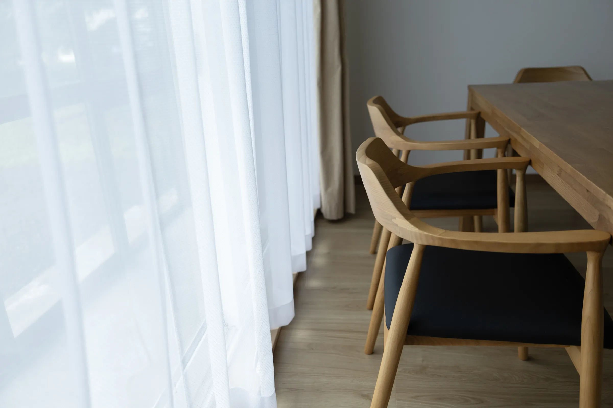

Works 01 | Space, Brand, Web | 2026
UBAKU Villa 宇莫別荘
From an empty farmhouse to a private villa for one group a day.
A former farmhouse built in 1968 and passed down for over half a century, renovated. From space design supervision to branding (visual design and web design), everything was brought together in one consistent world.
- Renovation design supervision
- Furniture and lighting selection
- Logo
- Color
- Message card
- Guest guide
- Website